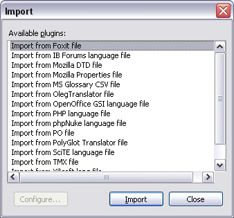

Starting with version 1.7, IniTranslator now has a generic Import/Export interface. You can access the installed handlers from the File-Import and File-Export menu items.
The dialogs shows a list of all available file parsers. If a file parser supports both importing and exporting, it will appear in both dialogs. If the parser can be configured, the Configure button will be enabled and you can click it to adjust the parser settings. Double-click an item in the list to start the import/export. Depending on the parser implementation, you are presented with different alternatives, like a dialog to select the file(s) to import or a dialog to preview the file content before you export it.

Ini Translator automatically loads any compatible DLL files it finds in the \plugins subfolder and adds it to the dialogs.
When you do an import, IniTranslator clears the stored filenames to prevent accidentally saving the imported file(s) to the wrong destination. To save an import back to it's native format, you must export it. To revert to the previously loaded files, use Recent Files to locate the files and load them.